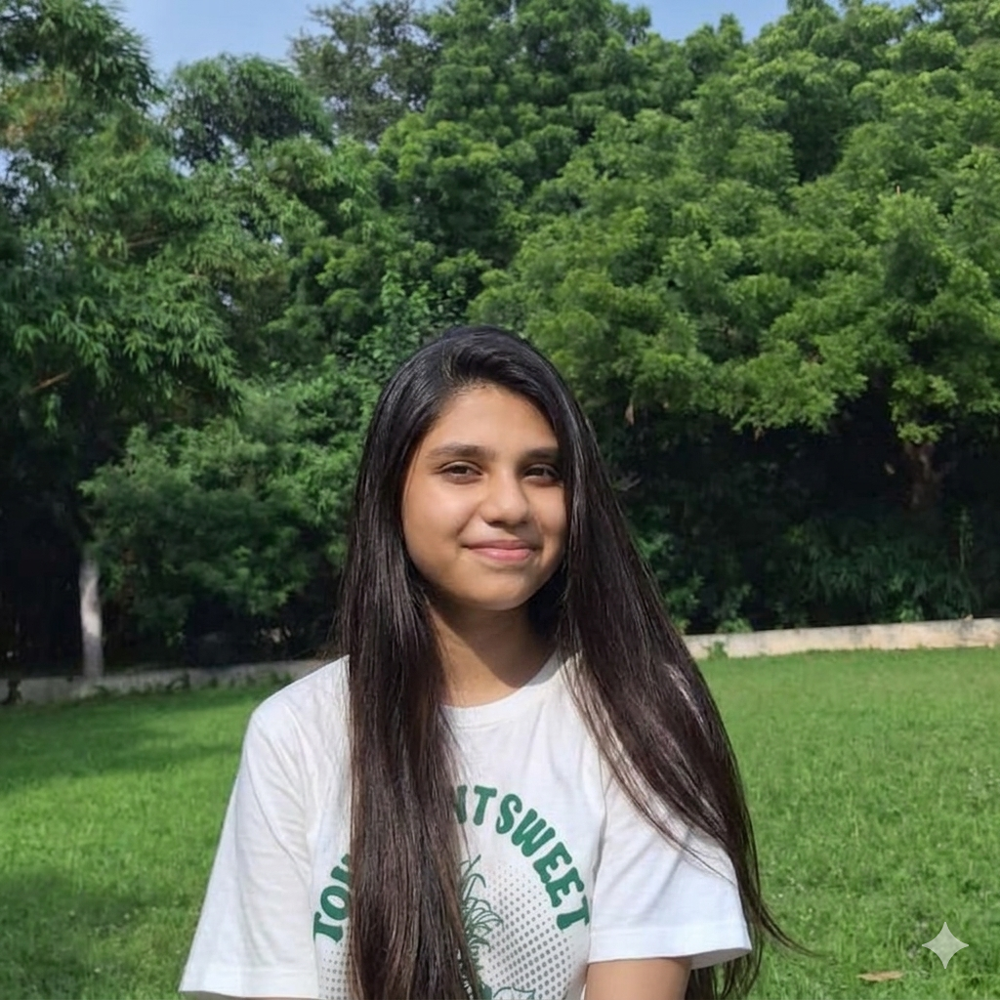

Passionate AI ML Enthusiast with a strong interest in web development and emerging technologies. Seeking opportunities to apply technical skills, enhance practical knowledge, and contribute to innovative projects while continuously learning and growing as a developer.
Sumathi Reddy Institute of Technology for Women
2028(Ongoing)
SR Junior College for Girls
2024
St. Peter's Cen Pub School
2022
Developed an intelligent study scheduling system by integrating MySQL and Scikit-learn. Implemented timetable generation and personalized study recommendations to improve productivity.
Developed a centralized platform that helps students prepare for aptitude, technical, and HR interviews through topic-wise modules and built-in progress tracking.
Currently contributing to a team-based full-stack web application using NLP for resume analysis, keyword matching, ATS compatibility evaluation, and candidate assessment.
June 2025 – Present
Gaining hands-on experience in web development and design through the creation of responsive and user-centric web applications. Strengthened practical skills in frontend development, interface design, and problem-solving by working on projects such as a landing page, personal portfolio website, and temperature converter application while applying modern web technologies and industry best practices.
Languages Known: English, Telugu, Hindi
Nationality: American
TASK-i4TY 2.0 - Innovatoion for telanagana youth
📍 Warangal,Telangana, India